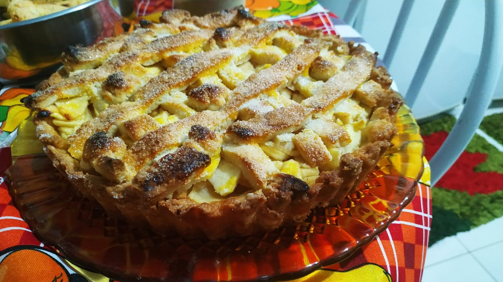

Apple Pie

Description
This is one of my favorite recipes, it is inexpensive and tastes delicious.
It is not too hard to prepare, allow me to show you how.
Ingredients
Dough:
- 3 1/2 cups of flour
- 1 cup of sugar
- 1 egg
- Zest of 1 lime
- Pinch of salt
- 4 tablespoons of milk
- 200g of unsalted butter
- 1 teaspoon of dry yeast
- To coat: 1 egg yolk
- To finish: Granulated sugar
Filling:
- 6 apples
- Juice of 2 limes
- 1/2 a cup of sugar
- 1/2 a teaspoon of ground cinnamon
- 1/3 of a teacup of bread crumbs
Steps
- For the Dough: Put the flour in a bowl, along with the pinch of salt, the sugar and the yeast. Melt and add the butter and mix with your fingertips until it becomes a moist and crumbly. Add the egg, the lime zests and the milk. Mix it well until it becomes a cohesive dough> Knead it into a ball, put it in plastic wrap and put it in the fridge for 30 minutes.
- After, spread the dough on a floured surface and transfer it to a cake mold with a removable bottom, cutting and adjusting the dough according to the shape of the mold.
- Poke holes in the dough with a fork . Take it to a preheated oven at 180Cº for 15 minutes.
- During that time you should prepare the Filling: Peel and cube the apples. mix the lime juice, the cinnamon and the sugar.
- Remove the dough from the oven, spread the breadcrumbs over the bottom and add the filling.
- Spread the remaining dough, cut it into strips and decorate the pie. Use a brush to gently coat the raw surface of the dough with the egg yolk and pepper it with the sugar.
- Take it to the preheated oven for 40 minutes at 180º.
- Take it off the oven and allow it to cool off before enjoying your pie.